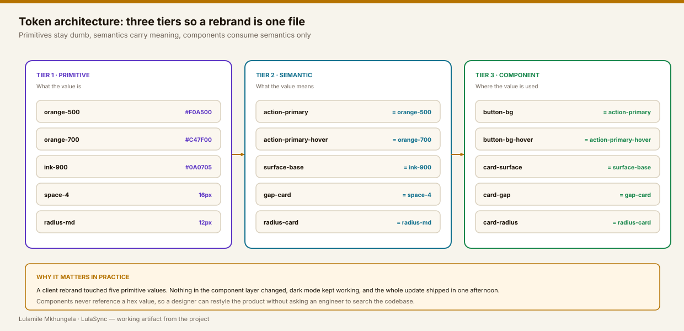

Case study 04 · Design systems & DesignOps
ONE NAME
FROM FIGMA TO PRODUCTION.
Most design systems fail quietly: a token gets renamed, a hex value gets pasted into a feature branch, and six months later the Figma library and the product no longer agree. I built a pipeline where that cannot happen, because the name never changes between tools.
01
THE HANDOFF IS NOT THE PROBLEM.
THE TRANSLATION IS.
Every drift bug I have chased started the same way: a value was retyped by a human. A designer names something
primary/900, an engineer types #C47F00, and both are convinced they are right.
Figma: primary/900CSS:
--brand-darkAngular: [type]="cta"Each name made sensein its own
fileon the day it was written64 design QA commentsper releaseand a
rebrand nobody wanted to startI stopped treating this as a documentation problem. It is a naming problem, and naming can be enforced by a build.
02
I COUNTED EVERYTHING FIRST.
A design system pitch without numbers is an opinion. Two days of scripted auditing gave me the argument.
213 hard-coded colours
Found by a script across the feature codebase. 41 of them were near-duplicates of the brand orange.
7 button variants
Living in four repositories, none of them identical, three with different focus behaviour.
3.5 days
Average time to build a new screen, mostly spent rebuilding things that already existed.
41% coverage
Share of production components that had a matching Figma source anyone could point to.
03
THREE TIERS SO A REBRAND
IS ONE FILE.
Primitives hold values. Semantics hold meaning. Components consume semantics only, and never a raw value. It is a boring structure, and boring is the point.

04
CHANGE A TOKEN, WATCH THE SYSTEM MOVE.
This is the idea in miniature and it is live. Move a control and every component below updates, along with the generated CSS — exactly what the pipeline does between Figma and Angular.
Four tokens. Nine components. Nobody edits a component to make this happen.
Card component
Padding, radius and body size all come from tokens. Nothing here is a magic number.
05
FIVE STAGES, NO RETYPING.

Variables, not styles
Colour, spacing, radius and type live as Figma variables with modes for light and dark.
Component properties are named exactly as they will be typed in Angular, so variant,
size and disabled mean the same thing in both places.
color/primary/900 #C47F00
color/primary/700 #F0A500
space/4 16
radius/md 12
font/body/size 14
// component property names = Angular @Input names
Button: variant, size, disabled, loading
One export, triggered by a merge
Token Studio writes a single tokens.json. It is the only file that crosses the
boundary between design and code, and it is reviewed like any other change.
{
"color": { "primary": { "900": { "value": "#C47F00", "type": "color" } } },
"space": { "4": { "value": "16px", "type": "spacing" } },
"radius": { "md": { "value": "12px", "type": "borderRadius" } }
}
Style Dictionary does the typing so people do not
CI turns the JSON into CSS custom properties and TypeScript types. Humans never edit the generated files, and the build fails if someone tries.
/* variables.css — generated, do not edit */ :root { --color-primary-900: #C47F00; --space-4: 16px; --radius-md: 12px; } // tokens.ts — generated types keep the editor honest export type ColorToken = 'primary-900' | 'primary-700' | 'surface-base';
Components consume tokens, never values
Eighty standalone Angular components, each one a thin layer over semantic tokens. A designer can read the class and recognise their own file.
@Component({ selector: 'ds-button', standalone: true }) export class ButtonComponent { @Input() variant: 'primary' | 'secondary' | 'ghost' | 'danger' = 'primary'; @Input() size: 'sm' | 'md' | 'lg' = 'md'; @Input() disabled = false; @Input() loading = false; // announced via aria-busy } /* button.component.css */ .btn--primary { background: var(--action-primary); border-radius: var(--radius-md); }
Docs that cannot go stale
Storybook publishes on every merge. Stories mirror the Figma page structure, controls expose the same props, and each component carries a status: ready, partial or do not use yet.
Status labels
Engineers know at a glance what is safe for production.
Copy-paste snippets
The docs tab gives the exact markup, already accessible.
Accessibility notes
Keyboard behaviour and ARIA are documented per component, not left to interpretation.
06
A SYSTEM IS A HABIT,
NOT A LIBRARY.
The one rule that does the heavy lifting
If Figma calls it color/primary/900,
CSS calls it --color-primary-900 and Angular calls it primary-900. No synonyms, no
translation table, no institutional knowledge required.
That single discipline removed the most common source of design and development drift entirely, and it costs nothing to maintain.
07
WHAT THE PIPELINE DELIVERED.
The rebrand is the number that convinced leadership. Five primitive values changed, dark mode kept working, and no component code was touched.
08
WHAT I WOULD DO DIFFERENTLY.
Ship the migration tooling with day one
Squads adopted faster once there was a codemod. I wrote it in month four; it should have existed in week two.
Write the contribution guide before the components
For the first quarter I was the bottleneck, because nobody knew how to contribute without asking me.
Measure adoption, not output
Counting components felt productive. Counting how many screens used them was the metric that actually drove decisions.
NEED A DESIGN SYSTEM
ENGINEERS ACTUALLY TRUST?
I design and implement the pipeline: token architecture, component library, documentation and the governance that keeps it alive. Tell me your stack and team size.